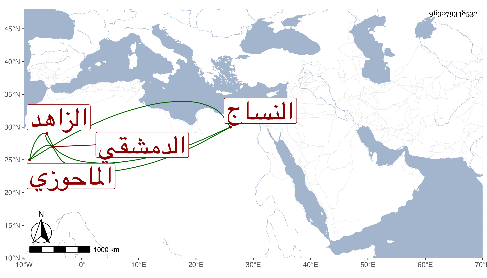

0902Sakhawi.DawLamic.ITO20230111-ara1.EIS1600.963079348532
Biography ID: 963079348532
668
علي بن أيوب الماحوزي الدمشقي النساج الزاهد والد الجمال عبد الله الماضي ويعرف بأبيه . قال شيخنا في إنبائه : كان يسكن بقرب قبر عاتكة وينسج بيده ويبيع ما ينسجه بأغلى ثمن فيتقوت منه هو وعائلته ولا يرزأ أحد شيئا مع مشاركة في العلم وحسن عشرة وطلاقة وجه ولذا قال ابن حجي أنه عندي خير من يشار إليه بالصلاح في وقتنا . مات في عاشر ربيع الآخر سنة ثلاث وللناس فيه اعتقاد زائد وتذكر عنه كرامات ومكاشفات رحمه الله .
